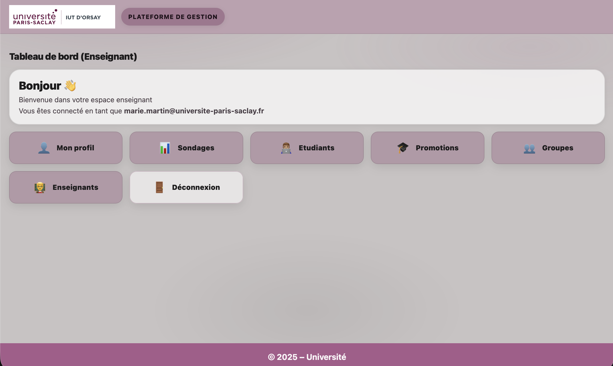
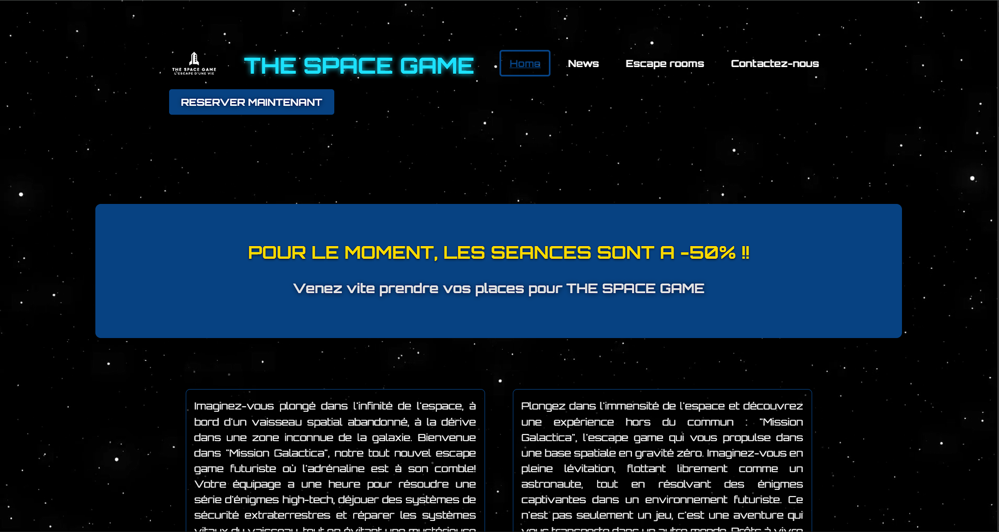
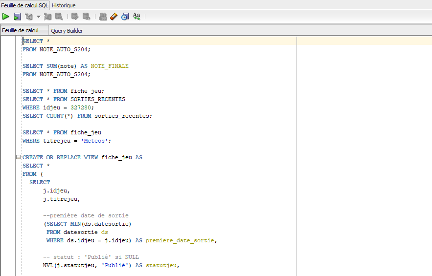
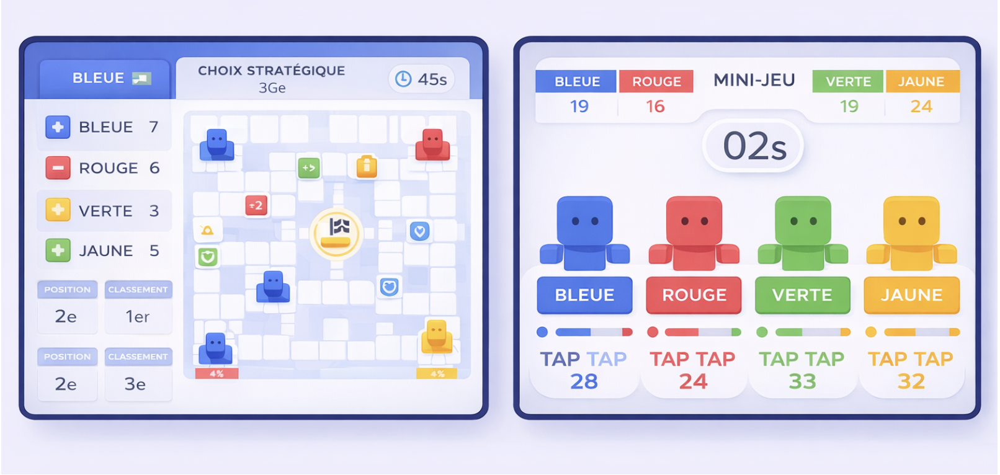

Recherche d'alternance BUT 3 • Développement
Je conçois des projets web et applicatifs avec une vraie logique de terrain.
Je suis Bekkar Khelaifa, étudiant en deuxième année de BUT Informatique à l'Université Paris-Saclay. Je recherche une alternance de 12 mois au rythme de 3 jours en entreprise et 2 jours à l'IUT pour renforcer mes compétences techniques en développement et les appliquer sur des projets concrets.
- Java • PHP • SQL • JavaScript
- Université Paris-Saclay • IUT d'Orsay
- Nanterre • Permis B/A2 • Véhiculé
BK
Bekkar Khelaifa
Étudiant en BUT Informatique
À propos
Un profil technique, sérieux et orienté progression.
Mon objectif
Rejoindre une entreprise en alternance pour participer à des développements utiles, progresser en équipe et consolider mes bases en conception, base de données, développement web et applicatif.
Ma formation
Bachelor Universitaire de Technologie en Informatique à l'Université Paris-Saclay, parcours A : réalisation d'applications, conception, développement et validation.
Ma manière de travailler
Curieux, autonome et impliqué, j'aime comprendre les besoins, structurer proprement une solution puis la rendre claire pour l'utilisateur final.
Compétences
Des bases solides sur plusieurs couches d'un projet informatique.
Développement
Java
Python
C#
C++
PHP
JavaScript
HTML / CSS
Base de données
SQL
JDBC
Modélisation
Requêtes
Système & réseau
Linux
Windows
Routage
Pare-feu
NAT
VLAN
Langues & soft skills
Français natif
Anglais B2
Japonais A2
Communication
Autonomie
Gestion d'équipe
Projets
Une sélection de projets qui montrent mon évolution.

Projet phare
Application de gestion et de création de groupes
Conception et développement d'une application destinée aux enseignants responsables de l'IUT d'Orsay. Le projet mobilise à la fois l'analyse, la conception orientée objet, la base de données et le développement web.
Java
PHP
SQL
Conception OO

Création d'un site web
Développement d'un site en HTML, CSS et JavaScript avec une interface responsive, une attention portée à la clarté visuelle, aux performances et à l'accessibilité du contenu.
HTML
CSS
JavaScript
Responsive

Base de données auto-école
Projet académique autour de la modélisation et de la gestion d'une base de données complète, avec requêtes SQL et organisation rigoureuse des entités métier.
SQL
Modélisation
Conception

Projet en cours
Labyrinthe Party
Développement d'une application de jeu réalisée en groupe autour d'un labyrinthe interactif. Ce projet met en avant le développement d'application en Java, des aspects de développement mobile, l'interactivité en JavaScript ainsi que la gestion de groupe et la coordination du travail en équipe.
Java
JavaScript
Développement mobile
Gestion de groupe
Travail en équipe
Expérience
Des expériences humaines qui renforcent ma posture professionnelle.
Équipier • Topivo (intérim)
Accueil des clients, service en buvette, travail en équipe dans des contextes dynamiques comme les concerts et les journées de matchs. Une expérience qui développe réactivité, sens du contact et efficacité collective.
Agent d'accueil • ACA Sécurité
Expérience en accueil et relation client, avec une exigence de rigueur, de présentation et de qualité de service, aujourd'hui réinvestie dans ma manière de travailler en développement.
BUT Informatique • Université Paris-Saclay
Parcours A : réalisation d'applications, conception, développement, validation. Passage en formation en apprentissage prévu dès septembre 2026 selon le CV fourni.
Contact
Disponible pour échanger sur une alternance, un stage ou un projet.
Je suis joignable pour discuter d'une opportunité en développement, base de données ou support technique.
bekkarkhel@gmail.com
06 27 73 53 68
linkedin.com/in/bekkar-khelaifa
Nanterre 92000 • Permis B/A2 • Véhiculé
Télécharger le CV